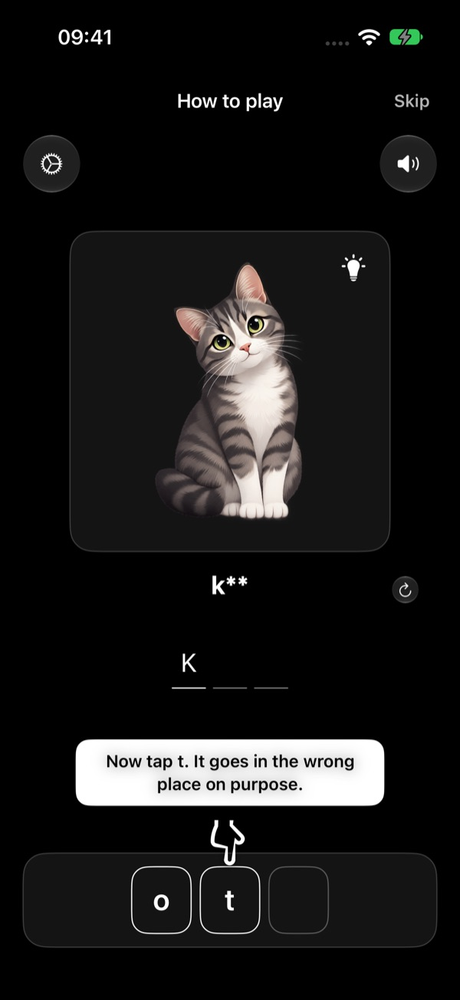
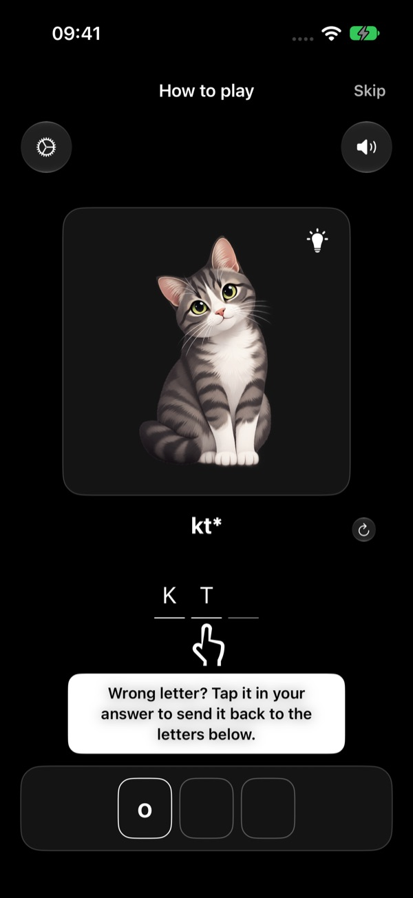
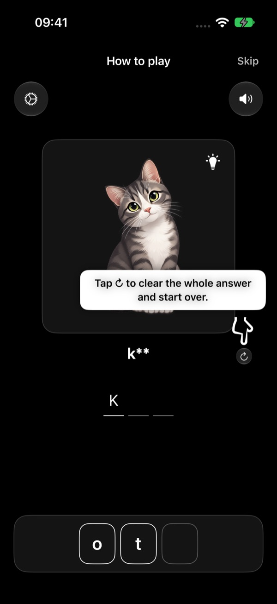
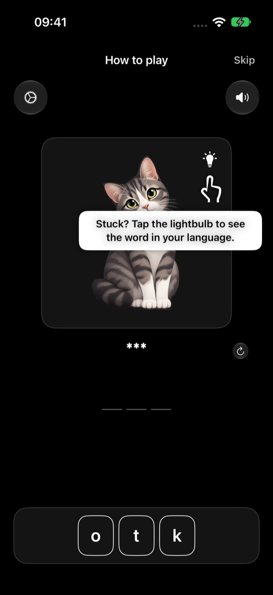
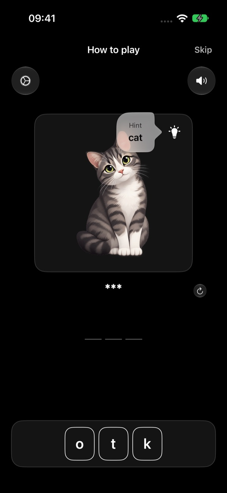
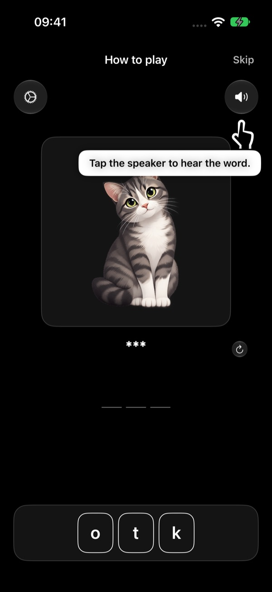
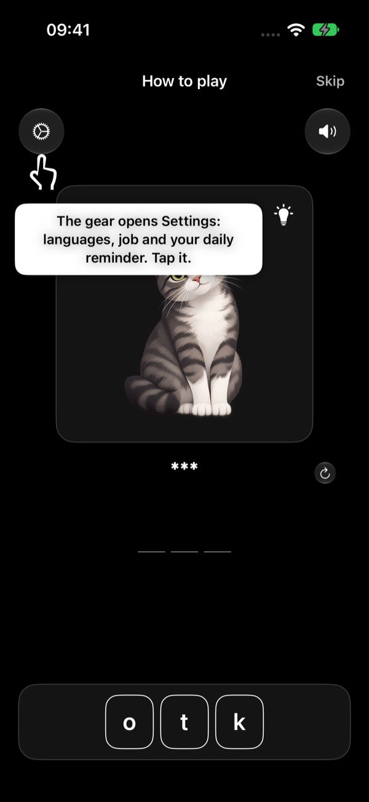
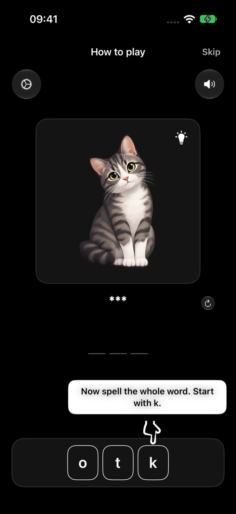
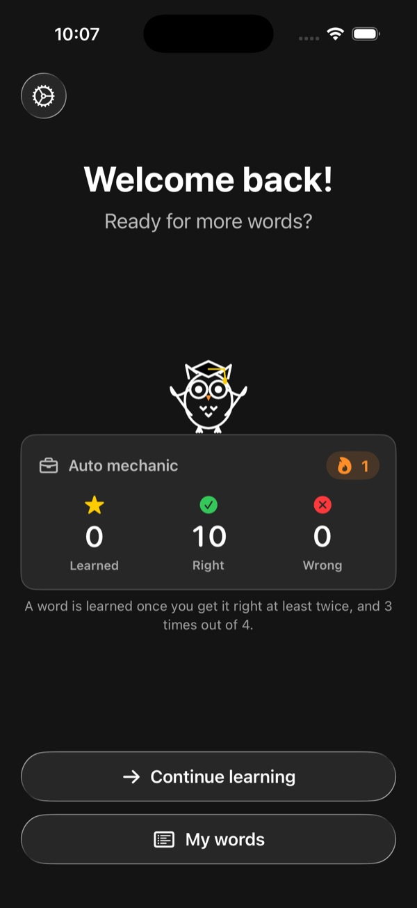
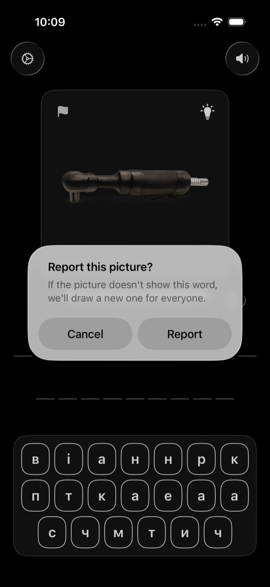

How to play
The same steps as the "How to play" tutorial in the app — with a practice word, "cat" in the language you're learning (here: Polish kot).
The app shows this tutorial right after you choose your languages and job. You can replay it any time: Settings → How to play. In the app, a pointer shows where to tap and everything is in your own language.
-

Spell what you see
Tap the letters to spell what you see. Start with k.
Look at the picture and tap the scrambled letters at the bottom in the right order. Each letter you tap fills the next empty slot of your answer.
-
Wrong letter? Send it back
Wrong letter? Tap it in your answer to send it back to the letters below.
The tutorial asks you to make a mistake on purpose. Then tap the wrong letter in your answer — it goes back down to the letters, ready to be used again.


-

Start the word over
Tap ↻ to clear the whole answer and start over.
The round arrow next to your answer clears every letter at once, so you can try the word again from the start.
-
Stuck? Use the hint
Stuck? Tap the lightbulb to see the word in your language.
The lightbulb on the picture shows the word in your own language. Tap anywhere to close it.


-
Hear the word, open Settings
Tap the speaker to hear the word.
The speaker at the top right reads the word aloud in the language you're learning. You can choose the speed (and, once a profession is unlocked, the voice) in Settings.
The gear at the top left opens Settings: your languages, your job, your daily reminder, audio, progress, purchases and help.


-
Spell the whole word
Now spell the whole word. Start with k.
When every slot is filled, the app checks your answer. Correct — the animals celebrate. Wrong — you see the right word. Every word you play is saved in My words.
You get 10 free words to try the app. Tap Let's go! to start playing with the words for your job.


After the tutorial
Your progress, and a flag for wrong pictures
The start screen shows your profession, how many words you've learned, all your right and wrong answers, and your days in a row.
If a picture doesn't show its word, tap the flag in its top corner and confirm — you get a new picture right away, and we check it for everyone.


Rounds and results
Words come in rounds of 10. After each round you see how many you got right this round, and for your profession: words learned (right at least twice, and 3 times out of 4), all right and wrong answers, and your days in a row.
My words
Every word you've played, with its picture and your right and wrong answers, hardest first. Tap Repeat all to play them again — it works without internet. Part of an unlocked profession.
Wrong picture?
Tap the flag on the picture. You get a new one right away, and we check it for everyone.
Daily reminder
One reminder a day at the time you choose — only if you haven't played yet that day. Change it in Settings → Daily reminder.
Need help?
See the Support page for common questions, or write to us.